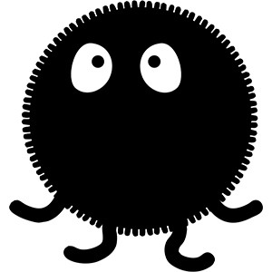
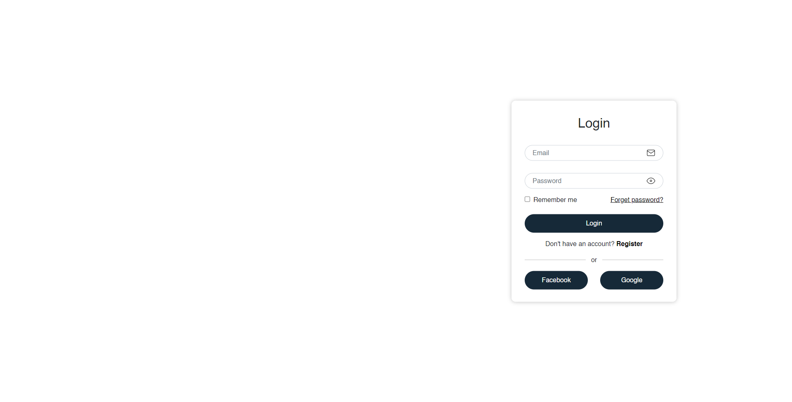
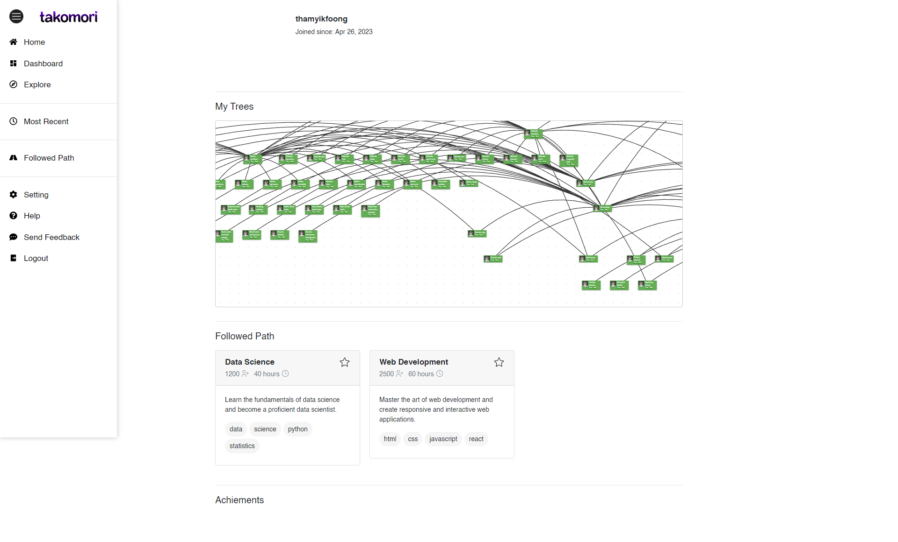
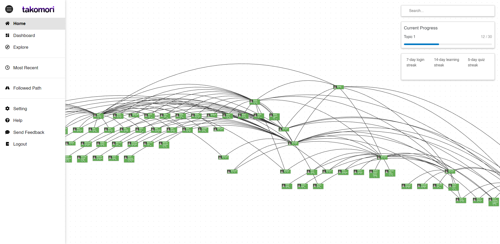
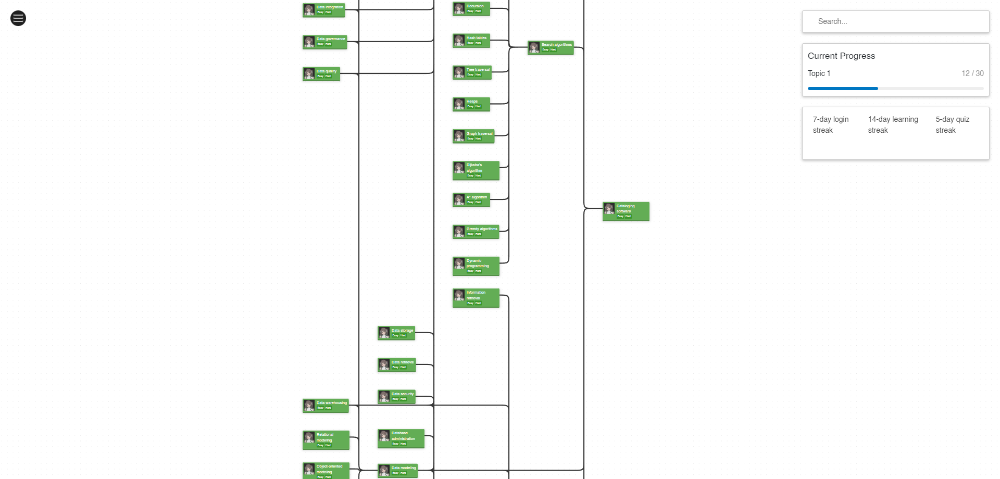
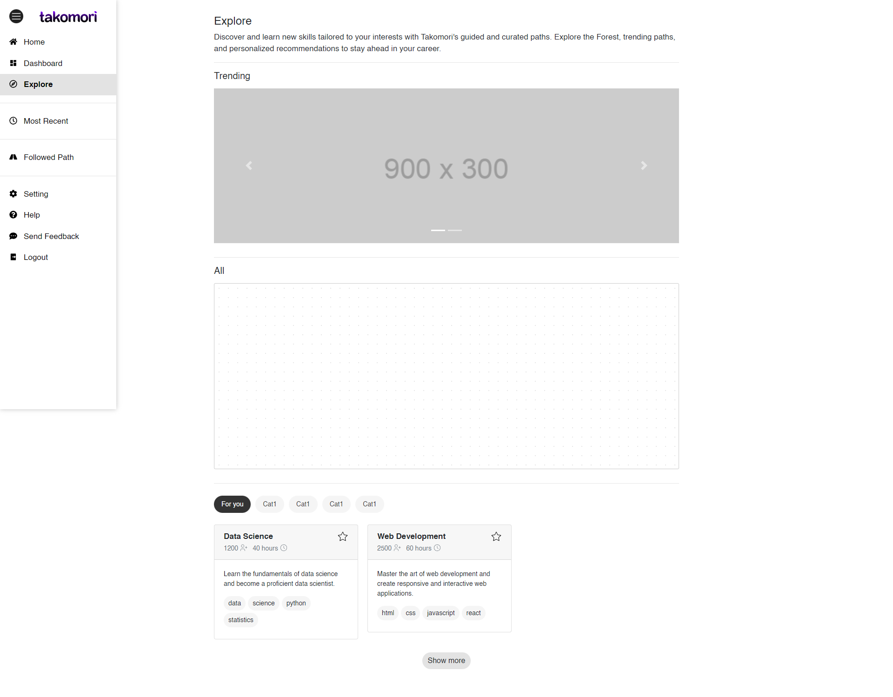
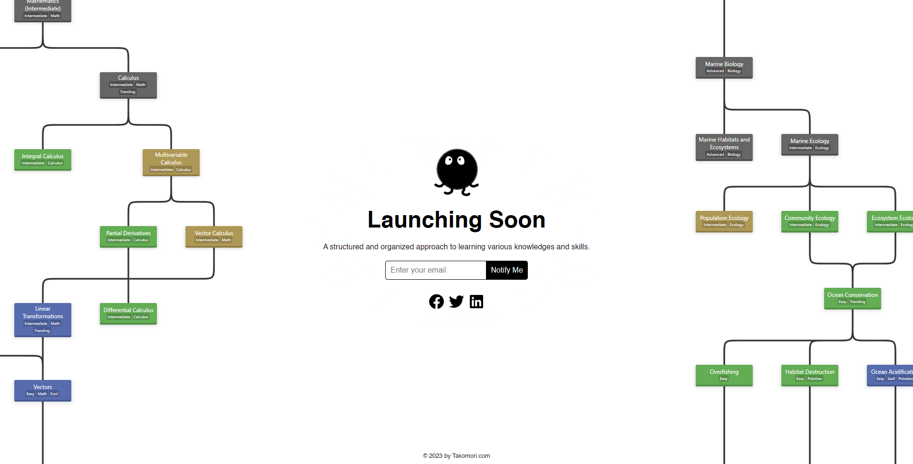

As mentioned in the previous post, I am writing a development blog to document the creation of the Prerequisite Knowledge Graph and its user interface, Takomori [1].
With that in mind, the project began along two parallel paths: (1) creating an ecosystem to govern the Prerequisite Knowledge Graph database, and (2) developing a web interface for user interaction. Since I am not familiar with app development, I decided to start with a simple web interface first using React for the front end and Node.js for the back end.
The Prerequisite Knowledge Graph is more than a simple graph dataset, it is a table of content for knowledge. Ideally, the graph should constantly incorporate new topics, reflecting the technological advancements of our world, and replacing less accurate topics. Thus, we need an ecosystem to manage the graph, integrating various subsystems such as voting systems and supervisory mechanisms to ensure the graph's accuracy. User-provided suggestion could be implemented to bring in more topics. As for version control, every month, the pre-live graph is promoted to the live graph status, and this setup allows experts and editors to work on and commit changes to the pre-live graph (sort of like git). Of course, the current ecosystem design is simple, given its ambitious goal to incorporate as much human knowledge as possible. This could potentially overwhelm the current framework design, but I hope to see improvements in future iterations.
Deciding where to host the prerequisite knowledge graph was a challenging choice. After much consideration, I chose to host the graph in both Neo4j and MongoDB. To be honest, I'm unsure if this is a wise decision. Having such an architecture might seem like a disaster waiting to happen, such as unsynced data between Neo4j and MongoDB, so on. My justification for this decision, however, is that storing non-graph-structured data can be quite troublesome. Although properties of the topic could be stored as nodes or node properties, the complexity of the data structure might become confusing in a long run (if there is a long run). Therefore, Neo4j is used to store the IDs of topics, their relationships, and some basic properties. The remainder of the data, which is easier to store and retrieve, is handled by MongoDB. This approach ensures a quicker retrieval of the knowledge graph than if the relationships and graph structure were stored solely in MongoDB.
Regarding this ecosystem, I believe it deserves a detailed explanation in a separate post of its own.
The reason behind the name "Takomori" is simple; it's catchy and the domain name was still available. Also, in Japanese, it translates to "octopus forest". This visual analogy depicts the octopus' head as a node, and its legs as connections to other nodes. Plus, octopuses are both cute and intelligent, which makes them perfect mascots for representing intellect (although owls would be a great choice too, but Duolingo already uses them). Moreover, the inspiration for the concept of ‘forest’ comes from the tech tree that often appears in games, which naturally, having a forest hosting many tech trees sounds amazing.
 This is the logo/mascot for the website. I named it Kurotako, a majestic octopus creature that strives to bring out the best in you.The next step involves choosing a tech stack, a challenging task given the market's saturation with too many options, each having their own merits. My first experience with web development is using PHP to make a small project, which remains the only backend language I know. However, it's somewhat unpopular among other developers. So, I turned to the internet for recommendations and ultimately decided to start with Node.js and EJS. After struggling with managing EJS pages on the front end, I settle for React instead.
Followed by that, I initiated the project by developing a simple site map and sketching several designs in Photoshop. Once prepared, I started coding, following several tutorials. The work involved nothing overly technical, just simple web development tasks. Afterall, this is not an in-depth, hardcore development blog/tutorial, as the technology and programming methodology employed are pretty basic. This post here is more of a casual dev blog, documenting the progress of this project. Here are some screenshots of the current progress:
 The login page.  The user dashboard.  The Prerequisite Knowledge Graph.  The Prerequisite Knowledge Graph with vertical layout.  The Explore page.  The Pre-launch landing page. Feel free to drop by and subscribe to the mailing list!However, I'm keen to write a blog about how the graph is presented as it is. Currently, I'm focusing on squeezing out a minimum viable product (MVP), and hopefully, I can finish it and discuss it in the next post. At this stage, the main task is still to design how the platform will look and work from a functional perspective, as a web product that encourages learning and provides guidance.